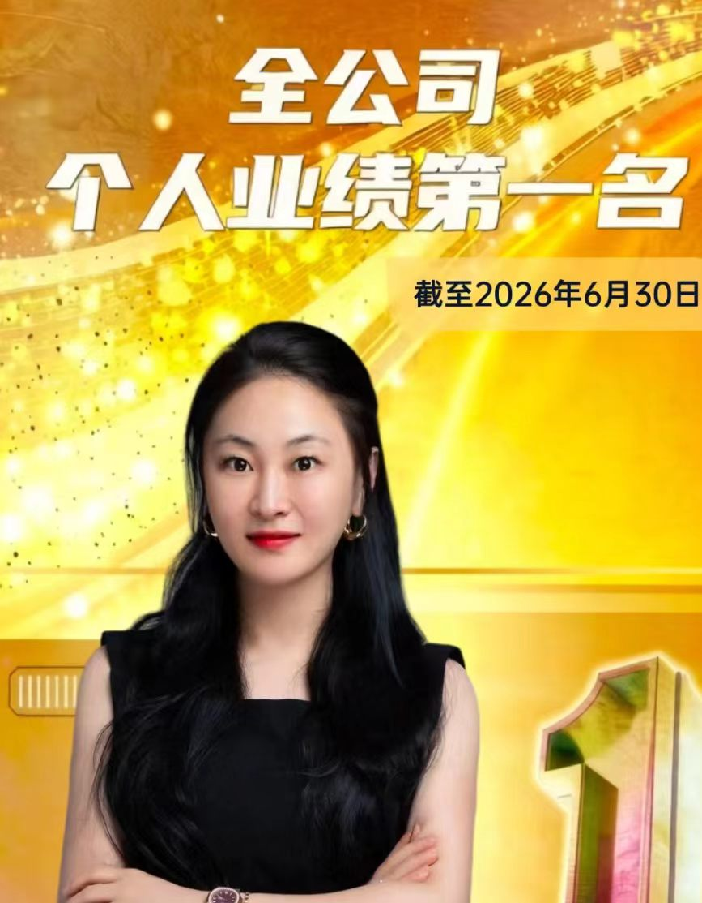
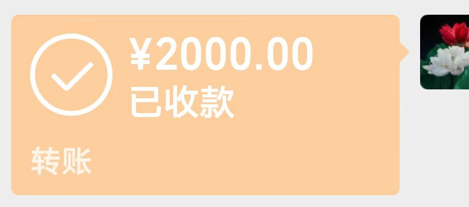

20260628合伙人选择
大清早，问事
要去香港，合伙人有
娜，90年
娜哥86年
静87年
自己84
84年，甲子，属鼠，金命
86，丙寅，属虎，火命
87，丁卯， 属兔，火命
90，庚午，属马，土命
只有土生金
所以说，这个娜娜是贵人
再一个，看气场，娜娜内外全亮
财气大，为人好
王静，体内有灰也是不如娜娜

王静

这不就对了，娜娜，全公司业绩第一
王静，2024年度第一
还是娜娜气场大
合伙人选择很重要

不仅数字上推出来，关键用到了透视眼，
神通，这就有价值了
红包，不要，不要
还是忍不住点了一下下
不要也得要
尊师重教
咱们觉着两千不少
人家也不算大老板吧，几百万有了
所以说，不管大人小孩，脑屏，肉眼通，两个小功能，能看清气场，分辨黑白，非常重要
几千公里外，同时用到了遥视眼，透视眼